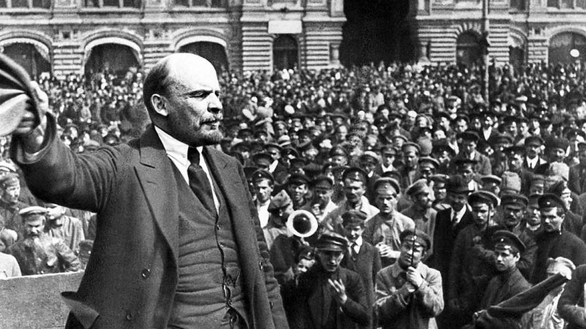
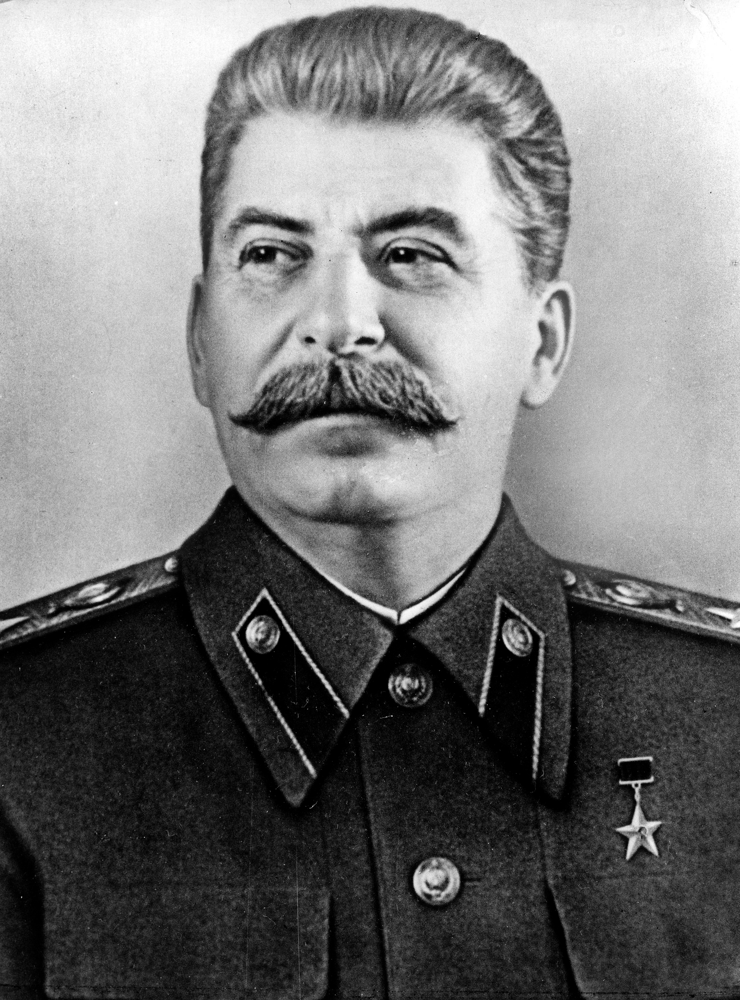
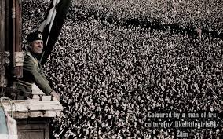
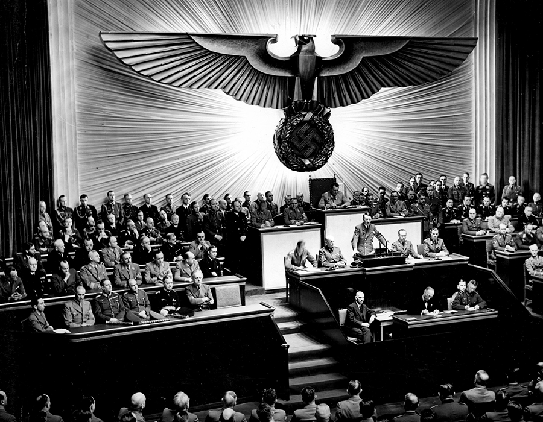
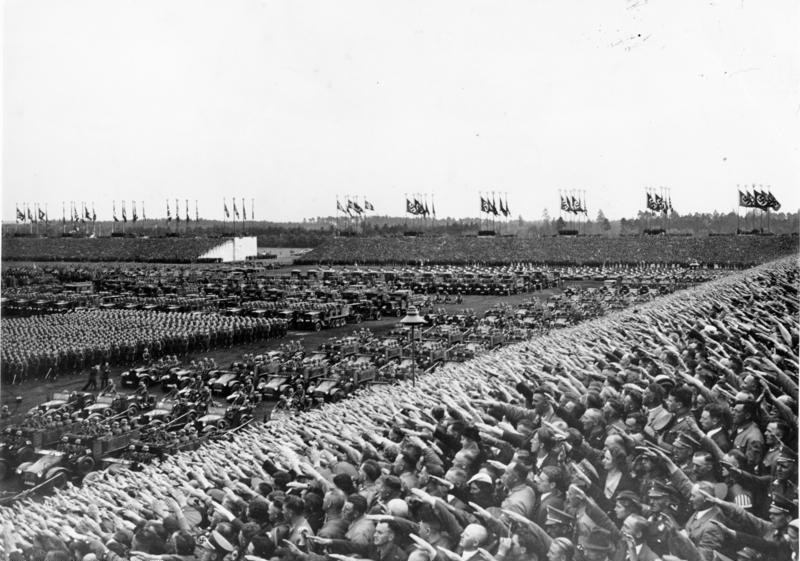
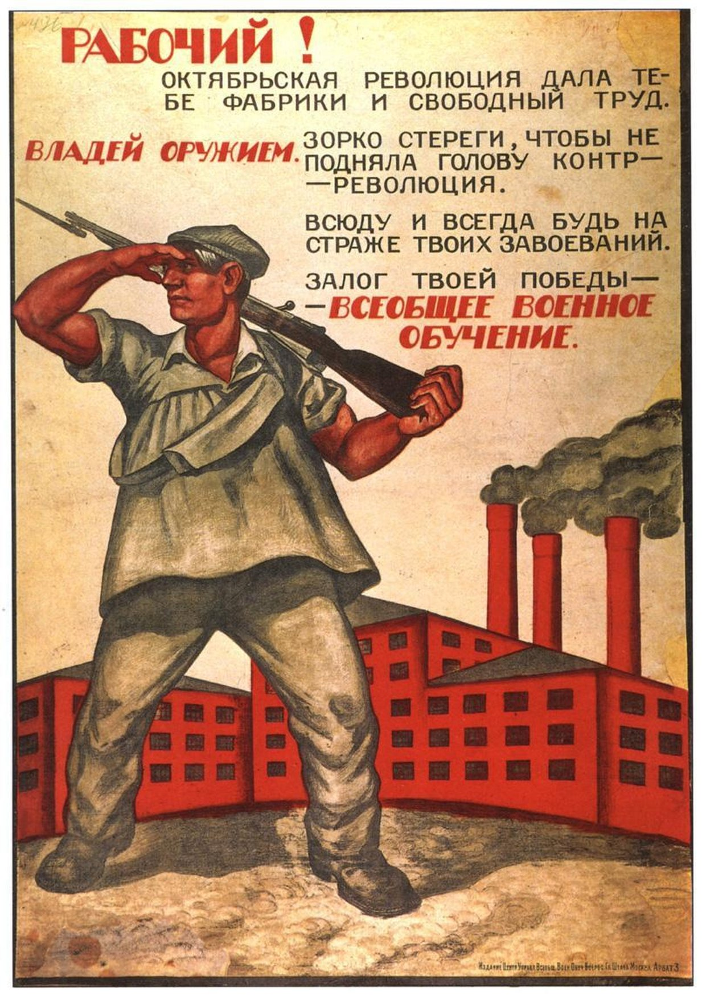
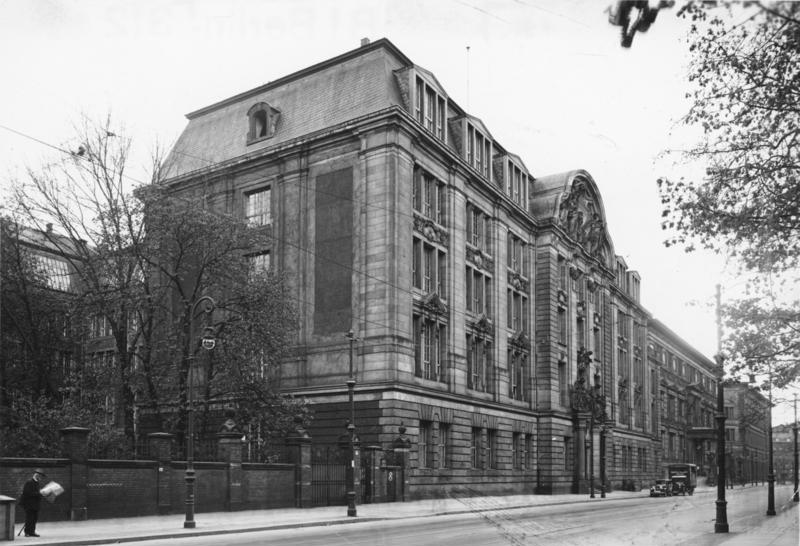
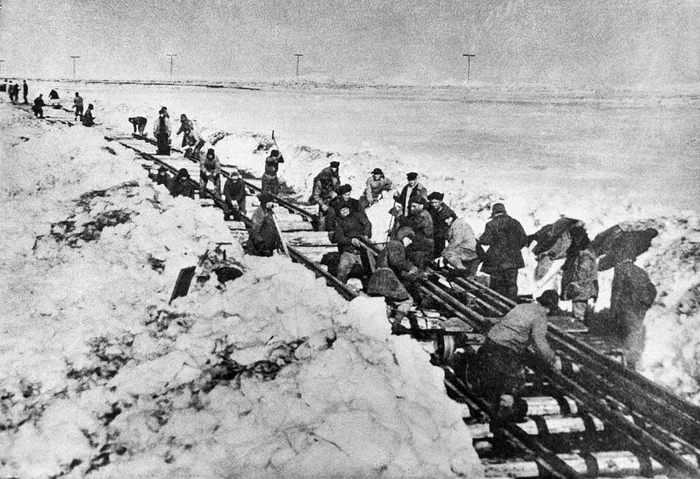
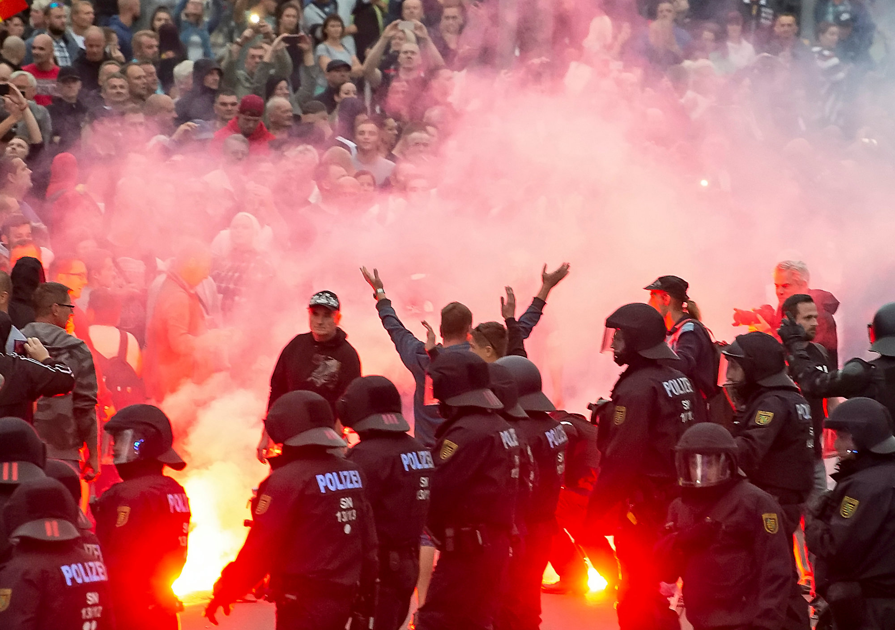

In 1933, a German teacher named Friedrich Kellner wrote in his diary that something was wrong. His neighbors were cheering in the streets. A man named Adolf Hitler had just been appointed Chancellor of Germany. Kellner did not cheer. He wrote: "This is a dark day." He would spend the next twelve years secretly recording what he saw, hiding his diary in the walls of his house.
In the decade after WWI, democracies across Europe cracked and broke. Governments that had promised freedom handed power to one man. Those men built systems designed to control everything: what people read, what they believed, where they worked, and whether they lived. The word for this kind of total control is totalitarianismTotalitarianism: a system of government where one leader or party controls every part of life, including speech, media, and the economy, and allows no opposition..
This is the story of how it happened, and why millions of ordinary people either supported it, survived it, or disappeared inside it.

In 1917, Russia was exhausted. Three years of WWI had killed millions of Russian soldiers. The people were starving. Tsar Nicholas II, the Russian emperor, seemed unable to fix anything. In February 1917, riots broke out in the capital city of Petrograd. The tsar was forced to step down.
A new democratic government took over, but it made a critical mistake: it kept fighting WWI. That decision kept the people hungry and angry. In October 1917, a radical group called the Bolsheviks seized power. Their leader, Vladimir Lenin, promised three things: land for the peasants, bread for the hungry, and peace from the war. His political system was called communismCommunism: a political system where the government owns all businesses and land, and is supposed to distribute wealth equally among all people, with no private ownership..
Lenin took Russia out of WWI, but he immediately started a new war: a civil war against anyone who opposed the Bolsheviks. By the time it ended in 1922, millions more were dead. Lenin had built a one-party state where no opposition was allowed. When Lenin died in 1924, a power struggle began. Joseph Stalin won.

Stalin transformed the Soviet Union into a fully totalitarian state. He collectivized farming, meaning the government took control of all farms and forced peasants to work on them together. In Ukraine, when farmers resisted, Stalin seized their grain anyway. Between 1932 and 1933, a deliberate famine called the Holodomor killed an estimated 3.5 to 7 million Ukrainians. Stalin called it a management problem. Historians call it a genocide.
Stalin also launched the Great Purge beginning in 1936. He arrested, executed, or sent to prison camps anyone he suspected of disloyalty; military officers, scientists, artists, and ordinary factory workers were all targeted. The prison camp system was called the GulagGulag: the Soviet system of forced labor prison camps where millions of people were sent for real or imagined crimes against the state.. At its peak, the Gulag held approximately 1.8 million prisoners. Many never came home.
Modern authoritarian governments still use many of Stalin's tools: controlling the press, eliminating political opponents, and creating fear so that people monitor each other instead of organizing against the government.
WWI left Italy and Germany in the same condition: humiliated, economically destroyed, and politically unstable. Both countries had governments that could not control the chaos. Both had millions of unemployed, angry young men. And in both countries, a single charismatic leader stepped forward with the same basic promise: I alone can fix this.


In Italy, Benito Mussolini founded the Fascist Party in 1919. FascismFascism: a far-right political system built on extreme nationalism, a powerful single leader, and the total submission of individuals to the state; it is violently opposed to democracy and communism. rejected both democracy and communism. Fascism demanded that citizens put the nation above everything else, including their own rights. Mussolini organized gangs of black-shirted followers who attacked political opponents in the streets. In 1922 he threatened to march on Rome with his armed followers. The king of Italy, afraid of a civil war, handed Mussolini the government. No election. No vote. Just fear and the threat of violence.
In Germany, Adolf Hitler led the Nazi Party using a similar strategy but with a more extreme ideology. Hitler added intense racial hatred to his fascism. He blamed Germany's problems on Jewish people, communists, and foreigners. His message was clear: Germany lost WWI not because of military failure but because it was "stabbed in the back" by internal enemies. This was a lie, but it gave angry Germans a target for their rage.
Hitler rose through legal means at first. In 1932, the Nazi Party won more votes in the German parliament than any other party. In January 1933, Hitler was appointed Chancellor. Within months, he had dismantled the German democratic system entirely. He used a suspicious fire at the parliament building to justify banning all other political parties. Germany's democracy died in less than a year.


Once a dictator has power, the real work begins: keeping it. Every totalitarian regime used the same set of tools, even when they claimed to stand for opposite ideologies.
The first tool was propagandaPropaganda: information, often false or one-sided, that is spread to make people support a government, leader, or idea.. Every totalitarian state controlled the press, the radio, the schools, and the arts. Citizens heard only what the government wanted them to hear. Children were taught to love the leader from their first day of school. Hitler Youth and Soviet Young Pioneers were mandatory organizations that replaced family loyalty with loyalty to the state.
The second tool was terror. Secret police forces watched everything. In the Soviet Union, the secret police was called the NKVD. In Nazi Germany, it was the Gestapo. In Mussolini's Italy, it was the OVRA. These organizations encouraged neighbors to report each other. Fear spread from the prisons outward through every street and apartment building. People learned to be silent.
The third tool was the scapegoat. Every totalitarian leader identified an enemy group to blame for the nation's problems. Stalin blamed "saboteurs" and "class enemies." Hitler blamed Jewish people, Roma, LGBTQ individuals, and disabled people. Mussolini blamed socialists and foreign powers. When the economy was bad or the government failed, there was always a ready answer: the enemy did it.
You encounter propaganda every day, though it does not always look like a Soviet poster. Social media algorithms are designed to show you content that makes you feel strong emotions, especially anger and fear. Governments and political groups still use images, music, slogans, and repetition to shape what people believe. The difference between information and propaganda is worth knowing how to spot.

On the surface, Stalin, Mussolini, and Hitler looked like enemies. Stalin believed in communism; Mussolini and Hitler believed in fascism. Communism said the government should own everything for the workers. Fascism said the nation was supreme and the individual existed only to serve it. They called each other dangerous. But as leaders, they operated almost identically.
| Category | Stalin (Soviet Union) | Mussolini (Italy) | Hitler (Germany) |
|---|---|---|---|
| Ideology | Communism: government owns all property and industry | Fascism: total loyalty to the nation-state above all else | Nazism: extreme fascism combined with racial ideology targeting Jewish people and others |
| How They Rose to Power | Won internal Communist Party power struggle after Lenin's death, 1924 | Threatened the king with armed march; appointed Prime Minister, 1922 | Won parliamentary elections, then dismantled democracy from inside, 1933 |
| Secret Police | NKVD; mass arrests, executions, Gulag camps | OVRA; monitored dissidents and opposition figures | Gestapo; arrested, tortured, and executed enemies of the state |
| Propaganda Method | State-controlled media, mandatory youth organizations, Stalin cult of personality | Controlled press, glorified Roman Empire imagery, Mussolini as heroic leader | Joseph Goebbels ran total media control: film, radio, rallies, and posters |
| Who They Blamed | "Class enemies," kulaks (wealthy farmers), political rivals | Socialists, communists, and foreign powers | Jewish people, Roma, communists, LGBTQ individuals, disabled people |
| Mass Violence | Holodomor famine, Gulag system, Great Purge: millions killed | Political opponents killed or jailed; colonial atrocities in Africa | Holocaust: systematic murder of six million Jewish people and millions of others |

The most important thing this comparison reveals: ideology is not the same as behavior. Two systems that claimed to be complete opposites produced the same results for ordinary people: fear, silence, and mass death. This is why historians study systems and structures rather than just taking leaders at their word about what they believe.

Freedom House, an organization that tracks democracy worldwide, reported in 2023 that global freedom has declined for seventeen consecutive years. Countries that were democracies twenty years ago are now run by single parties or strongmen. The tools are the same: control the press, build loyalty through fear and pride, scapegoat an outgroup, and dismantle the systems that would stop you.
If a government started controlling what you could read online, arresting journalists, and telling you that one group of people was the cause of all your problems, at what point would you recognize it as totalitarianism, and what would you do?